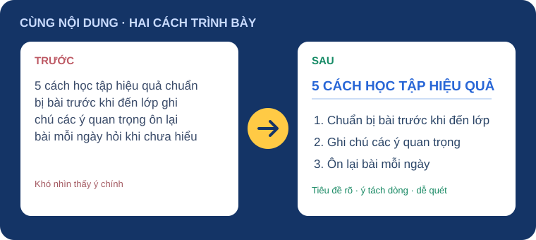
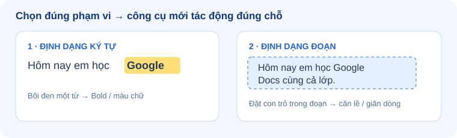
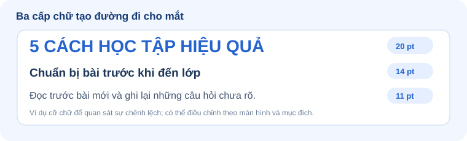
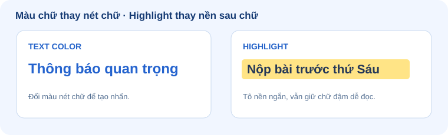
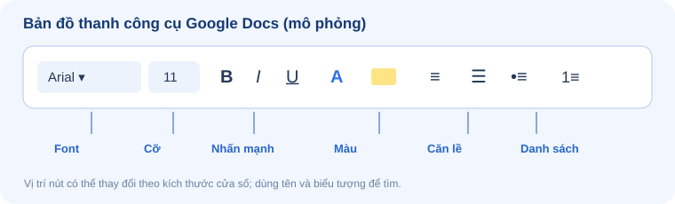
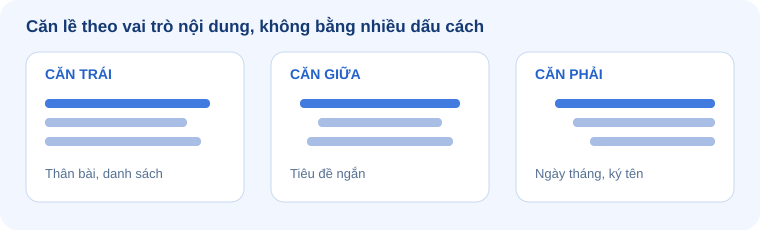
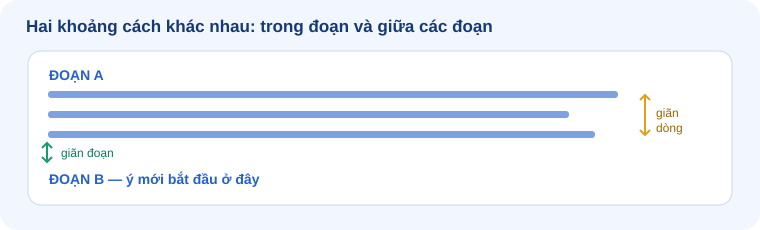

Dùng chữ, màu, khoảng cách và danh sách để người đọc nắm bắt ý chính ngay trong 3 giây đầu tiên.

Lựa chọn font chữ hài hòa, cỡ chữ phân cấp và nhấn mạnh từ khóa có chủ đích.
Căn lề chuẩn mực, giãn dòng và giãn đoạn thông minh bằng công cụ (không gõ Space/Enter).
Soạn thảo và chuẩn hóa hoàn chỉnh văn bản “10 quy tắc của lớp em” sẵn sàng in ấn/chia sẻ.
5 cách học tập hiệu quả chuẩn bị bài trước khi đến lớp ghi chú các ý quan trọng ôn lại bài mỗi ngày hỏi khi chưa hiểu nghỉ ngơi hợp lý
Đổi kiểu chữ: chọn một từ/câu. Căn lề hoặc giãn dòng: đặt con trỏ vào đoạn hoặc chọn cả đoạn.

Kiểu chữ. Ưu tiên font dễ đọc như Arial, Roboto, Times New Roman.
Cỡ chữ chuẩn gợi ý cho tiêu đề chính của bài thực hành.
Cỡ chữ tiêu chuẩn cho phần nội dung thân bài để đọc lâu không mỏi mắt.
Cùng cấp độ nội dung thì luôn giữ cùng một cỡ và một kiểu chữ.

Dành riêng cho tiêu đề, từ khóa định nghĩa, hoặc mốc thời gian quan trọng.
Dành cho lời dặn dò, lưu ý nhẹ nhàng, hoặc trích dẫn ngắn.
Dùng rất tiết chế! Tránh gạch chân quá nhiều vì dễ gây nhầm với đường link web.

Chuẩn bị bài trước khi đến lớp, ghi chép cẩn thận và ôn lại bài mỗi ngày giúp em tiến bộ nhanh chóng.

Văn bản gốc cần xử lý: 5 CÁCH HỌC TẬP HIỆU QUẢ
Mặc định cho hầu hết các đoạn văn bản thân bài và danh sách để mắt đọc tự nhiên.
Rất phù hợp cho tiêu đề chính, tên tác giả, hoặc các câu khẩu hiệu ngắn gọn.
Phù hợp cho một số thông tin đặc thù như ngày tháng năm, chữ ký ở góc dưới.


Dành cho các ý ngang hàng nhau, không quan trọng trước sau (ví dụ: nguyên liệu làm bánh, đồ dùng trong cặp).
Dành cho quy trình, các bước thực hiện, hoặc bảng xếp hạng cần số thứ tự rõ ràng.
Chuyển 5 dòng văn bản rời rạc thành danh sách có cấu trúc.
Tài liệu hoàn chỉnh kết hợp toàn bộ kỹ năng đã học trong buổi 3.
Tiêu đề nổi bật, phân cấp rõ ràng; nhấn mạnh có chủ đích bằng Bold/Italic; màu sắc tương phản cao.
Căn lề bằng Align và giãn đoạn bằng Paragraph Spacing; tuyệt đối không dùng phím Space hay Enter thừa.
Bullet cho nhóm ý ngang hàng; Numbering cho quy trình các bước để máy tự động quản lý số thứ tự.
Tạo tài liệu gồm: Tiêu đề nổi bật · Danh sách 5 món ăn sáng bằng Bullet/Numbering · Sử dụng Bold/Italic hài hòa · Highlight món em thích nhất · Căn chỉnh lề và khoảng cách đẹp mắt.
Sản phẩm nộp: Link Google Docs kèm file PDF xuất trực tiếp từ tài liệu.
Tất cả 17 trạm kiến thức được kết nối trong không gian 3D.
👉 Bấm vào bất kỳ tấm thẻ slide nào xung quanh để camera bay trực tiếp tới trạm đó!